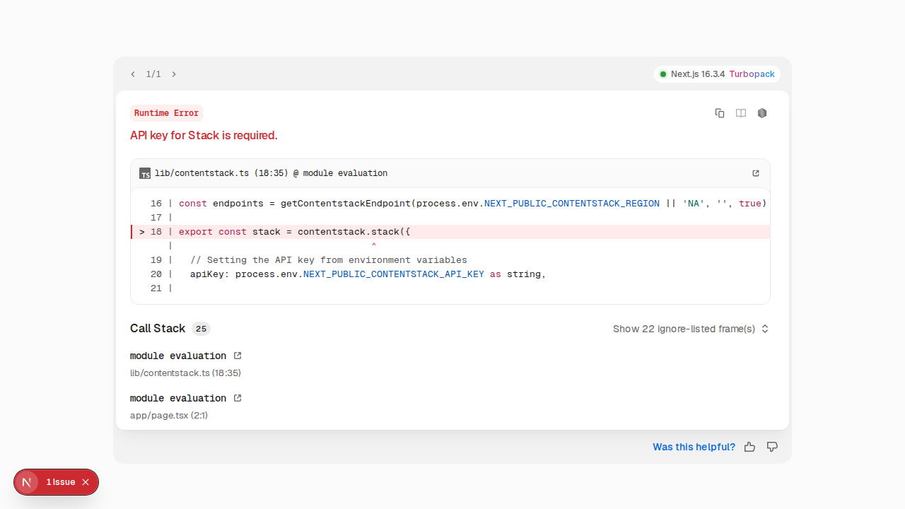

| Status | Type | Step | Detail |
|---|---|---|---|
| SKIPPED | unknown | Prerequisites | manual/unknown step — reported only |
| BROKEN | cli | Kickstart Next.js (Client-Side Rendering – CSR) | ✓ git clone https://github.com/contentstack/kickstart-next.git cd → /home/runner/work/Developer-Resources/Developer-Resources/kickstart-automation/workdir/next/kickstart-next ✓ npm install ✓ npm install -g @contentstack/cli ✓ csdx config:set:region AWS-EU ✓ csdx auth:login ↳ read Org ID from Org Admin → Info: blt8a2114027fb46d20 ↳ UI labels verified on screen: Info ↳ GAP: doc names UI item(s) not found in the app: Org Admin, Settings, Tokens, YOUR_API_KEY, NEXT_PUBLIC_CONTENTSTACK_DELIVERY_TOKEN, YOUR_DELIVERY_TOKEN, NEXT_PUBLIC_CONTENTSTACK_PREVIEW_TOKEN, YOUR_PREVIEW_TOKEN, NEXT_PUBLIC_CONTENTSTACK_REGION, YOUR_REGION_NAME, NEXT_PUBLIC_CONTENTSTACK_ENVIRONMENT, ENVIRONMENT_NAME, NEXT_PUBLIC_CONTENTSTACK_PREVIEW, Live Preview — the doc's click-path may be outdated ✓ csdx cm:stacks:seed --repo "contentstack/kickstart-stack-seed" --org "<YOUR_ORG_ID>" -n "CS Kickstart Next" ↳ seed output had no api key — resolved "CS Kickstart next mt3lobnd" via Management API: bltf0fe3c5d24c1cd8f ↩ npm run dev (deferred to verify stage) |
| SKIPPED | unknown | Key Files and Code | manual/unknown step — reported only |
| SKIPPED | unknown | Home Page Component | manual/unknown step — reported only |
| BROKEN | unknown | Project Structure — doc vs repo | GAP: 1/16 items in the doc's Project Structure are NOT in the repo: utils.ts |
| BROKEN | unknown | Code snippet — contentstack.ts | GAP: doc snippet for "contentstack.ts" differs from lib/contentstack.ts — only 83% of doc lines present. Examples missing:
// helper functions from private package to retrieve Contentstack endpoints in a convienient way
import { getContentstackEndpoints, getRegionForString } from "@timbenniks/contentstack-endpoints";
// Set the region by string value from environment variables
const region = getRegionForString(process.env.NEXT_PUBLIC_CONTENTSTACK_REGION || "AWS-EU"); |
| BROKEN | unknown | Code snippet — page.tsx | GAP: doc snippet for "page.tsx" differs from app/page.tsx — only 2% of doc lines present. Examples missing:
"use client";
import Image from "next/image";
import ContentstackLivePreview from "@contentstack/live-preview-utils";
import { getPage, initLivePreview } from "@/lib/contentstack"; |
| BROKEN | verify | Run the app — dev server | http://localhost:3000 responded HTTP 500 — app is erroring, not serving content |
| BROKEN | verify | Run the app — page renders | page shows an error: "API key for Stack is required" (see screenshot)  |